1 Open the AWS console, navigate to the IAM dashboard and select Users.
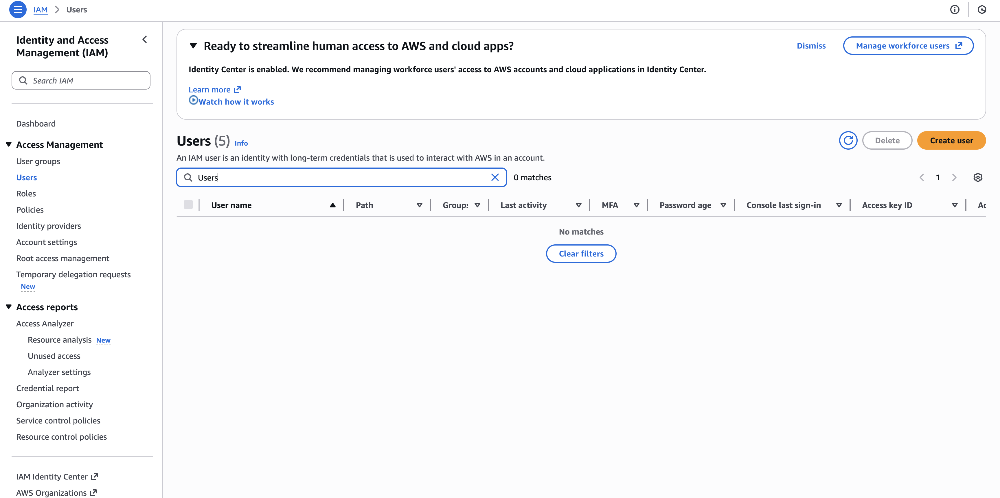
2 Click Add user, enter a descriptive user name, and proceed to the next step.
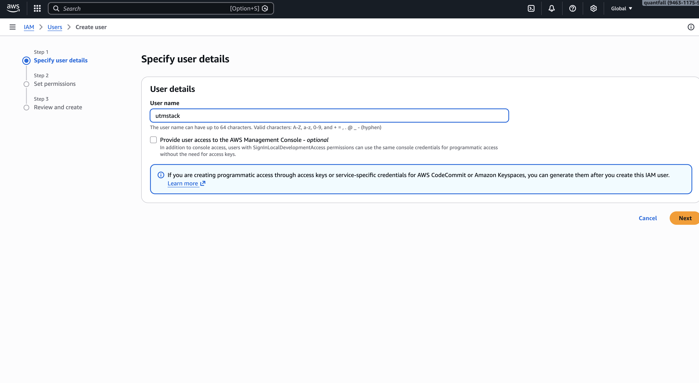
3 Under Permissions, attach the required policy. For read-only CloudWatch access select CloudWatchLogsReadOnlyAccess.
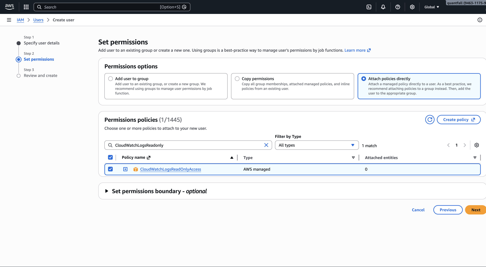
4 Review the configuration and click Create user to provision the account.
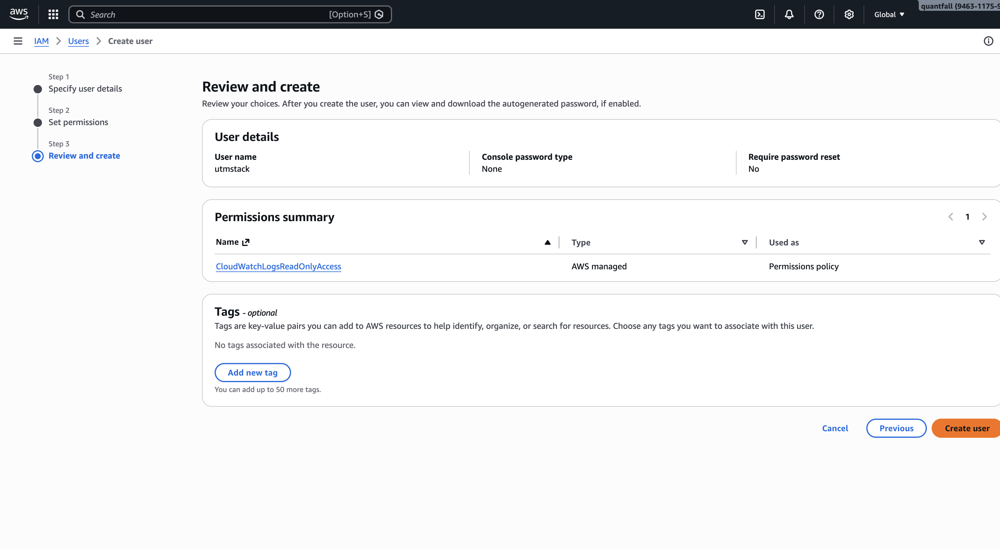
5 Open the newly created user by clicking its name to view details and manage credentials.
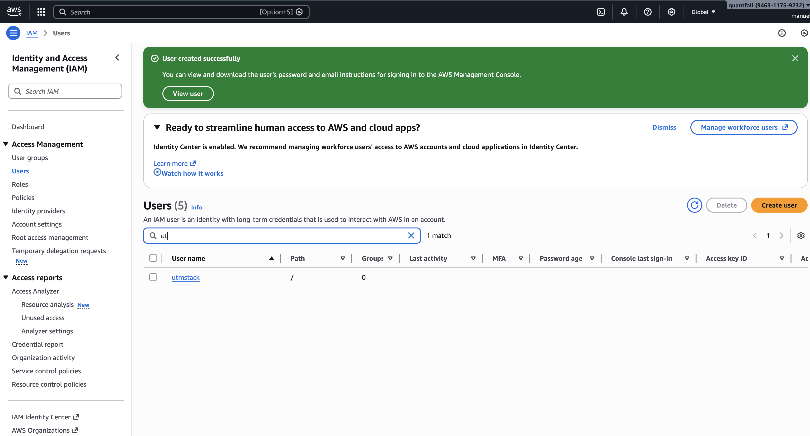
6 Go to the Security credentials tab to create programmatic access keys.
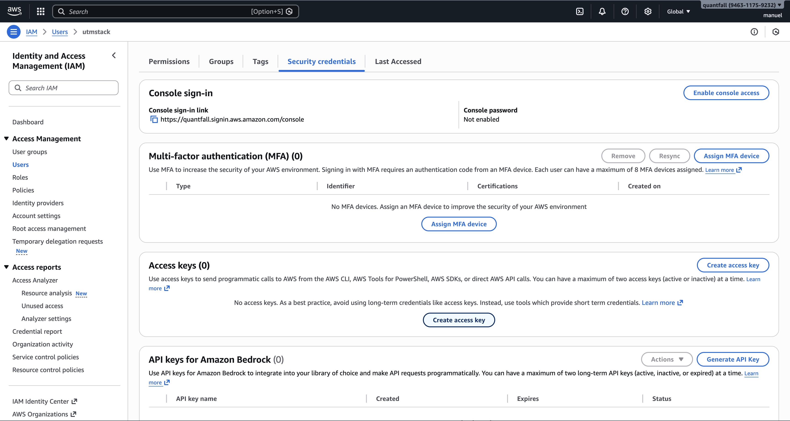
7 Click Create access key and choose the option for an application running outside AWS (programmatic access).
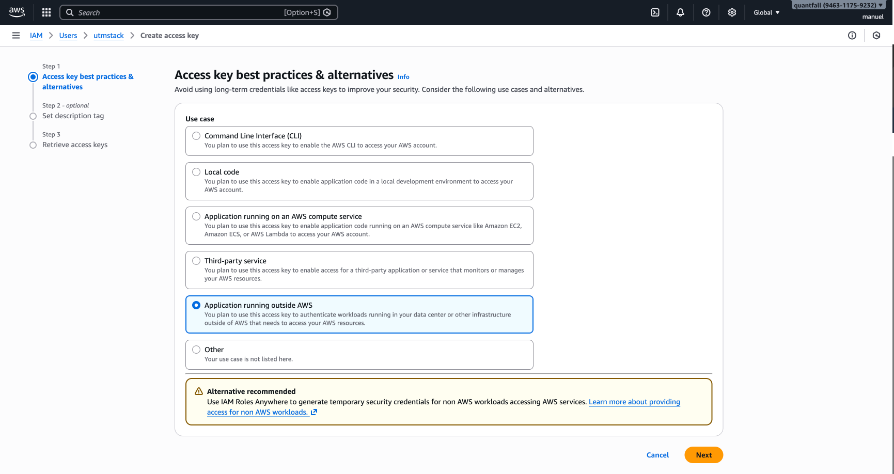
8 Confirm creation of the access key. AWS will generate an Access Key ID and Secret Access Key.
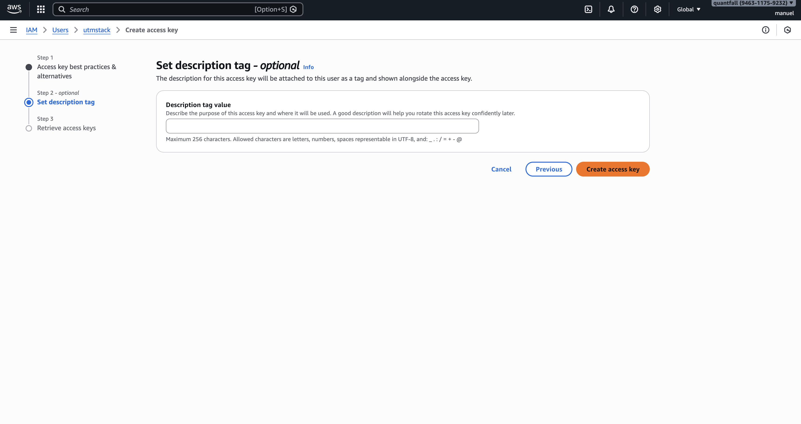
9 Download the credentials or copy the Access Key ID and Secret Access Key to a secure location. Treat the secret as sensitive.
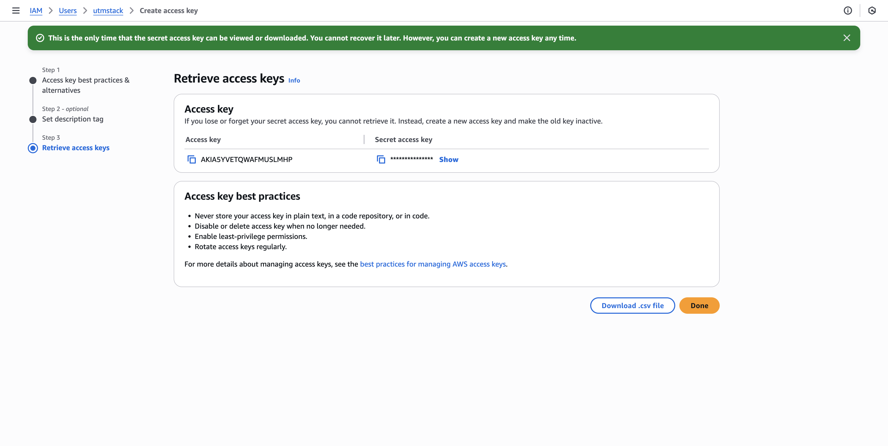
10 Enter the obtained credentials into the integration form below and validate the configuration.
11 Create a CloudWatch Log Group. Open the CloudWatch console, choose Log management and click Create log group.
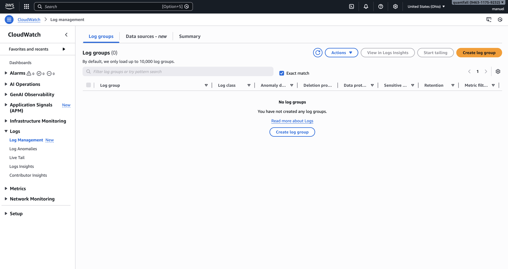
12
Name and retention. Enter the log group name utmstack and set retention to 1 day. Click Create log group.
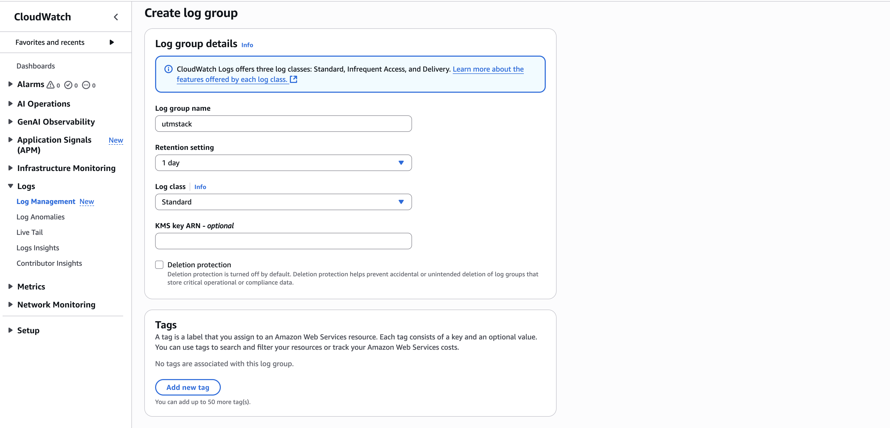
13 Open CloudTrail and start trail creation. In the CloudTrail console click Create trail to begin configuring a new trail.
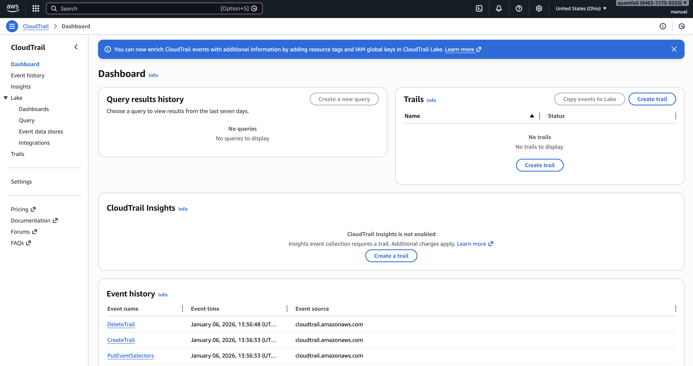
14 Configure delivery, validation and CloudWatch integration (single form). On the CloudTrail creation form set the following options as shown in the screenshot:
utmstack.CloudTrail-UTMStack-DeliveryRole).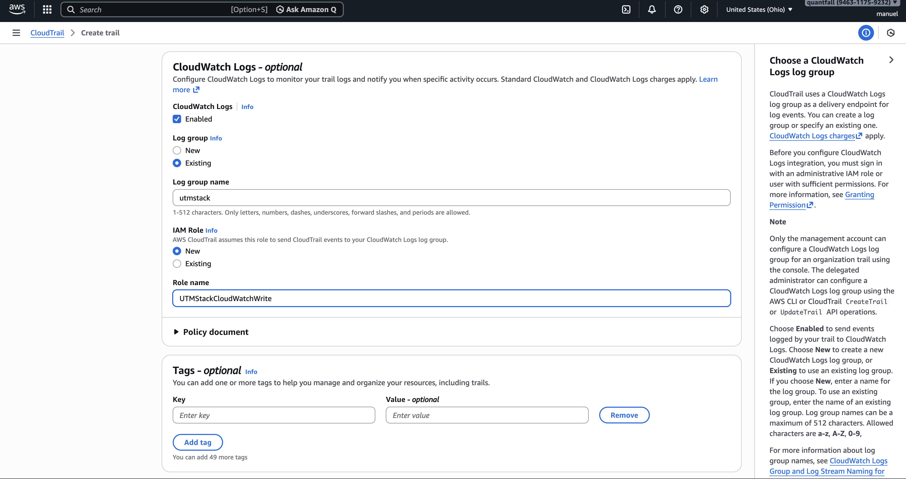
15 Select event types. On this screen enable the event categories required for monitoring and auditing. Follow the three sections below and match the checkboxes shown in each screenshot.
1. Management events
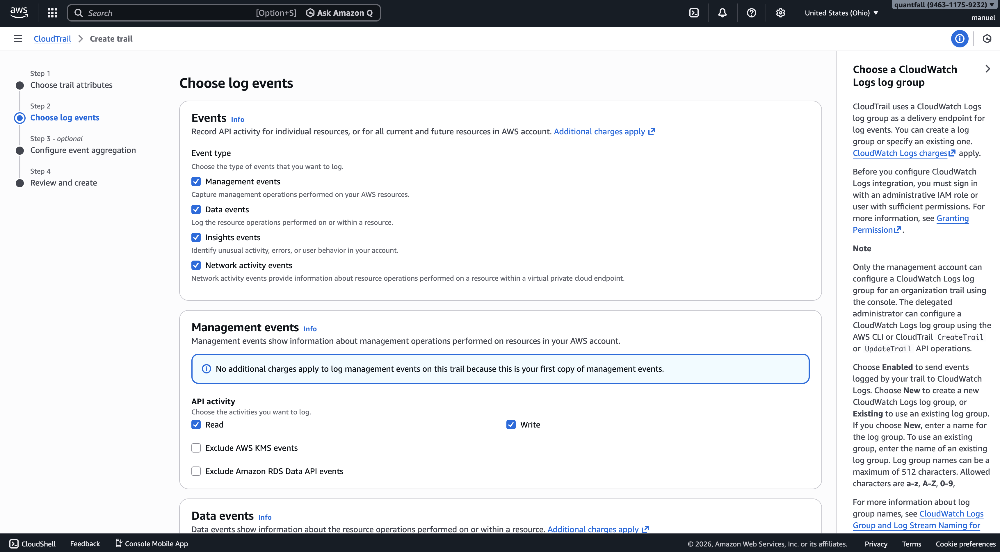
2. Data events
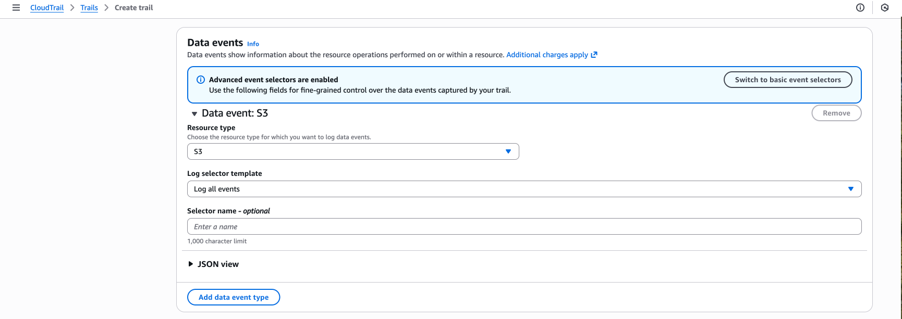
3. Network activity events (photo: 8.png)
ec2.amazonaws.com and enable Log all events for that service.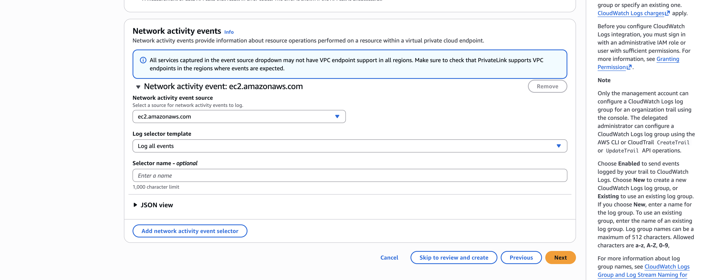
After confirming these selections, click Next to continue. Ensure the options match the screenshots and cover the resources you need to audit.
16 Configure aggregation and review. On the Configure event aggregation screen accept the defaults (or adjust if required). Review all settings and click Create trail.
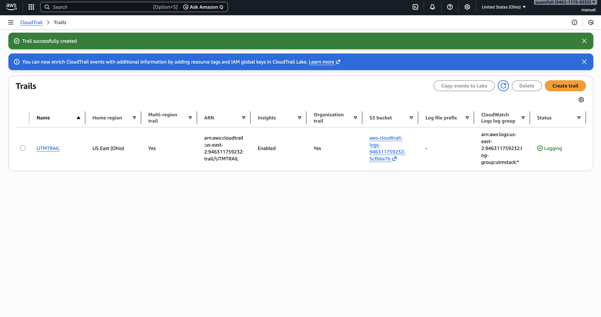
17
Activate the integration. After the trail is created and events are flowing to utmstack, click the button below to enable UTMStack features for this integration.